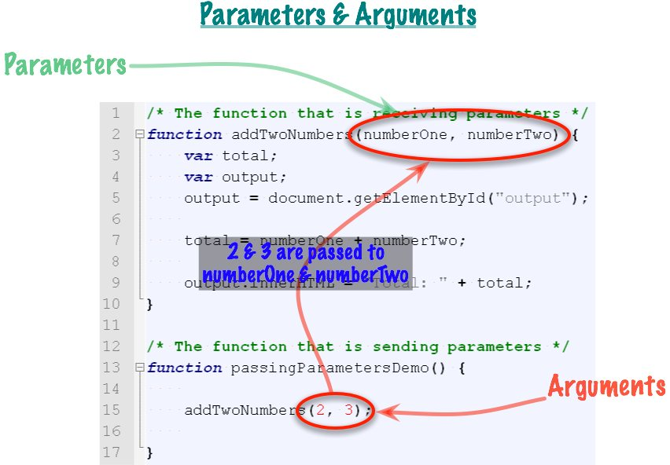
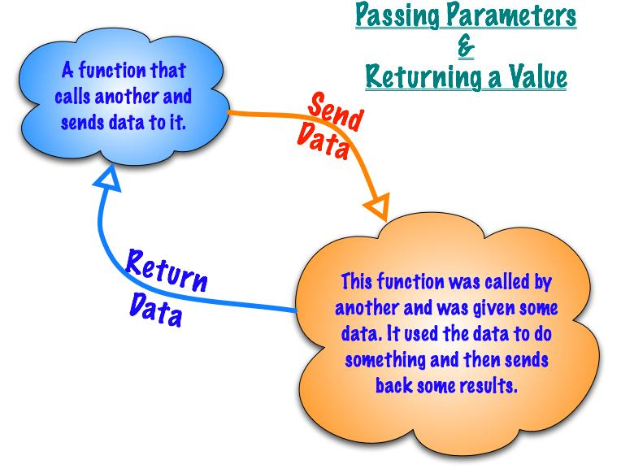

Learning Unit 5
Learning Unit 5Function To Function - How Functions Communicate
File: unit5/functionToFunction.html
Functions can communicate with each other in several ways.
Readings
- JavaScript Step by Step
- Chapter 7 - Working with Functions
What's the problem?
- The problem is that global variables are wide open for access by any function in their javaScript library file, and hence it is hard to keep track off from where their content arises, and to where it goes. If not handled carefully, they can be a cause of 'bugs' in systems, particularly when enhancements are made to the system, and a programmer doesn't realize that changing the value of a global variable in one function will have unintended consequences over in other parts of the system. Global variables reduce the water-tight modularization that is a hallmark of a well-designed programming solution. In short, global variables need to be handled with care, and only very deliberately used when they simplify some data movement situation.
- We've been using global variables so far in this learning unit. We will still use them for some things, since sometimes they are perfectly appropriate. However, all modern programming has the concepts of function parameters and arguments, which involve the use of local variables.
- Functions routinely need to use data from another function. This is what is meant when we say that functions communicate with each other.
- We have to communicate in two directions.
- When a function calls another function, it sometimes needs to transfer data TO the function it is calling.
- When a called function is done processing, sometimes the calling function needs to get data back FROM the called function.
- These two concepts are called:
- Passing Parameters
- Returning a Value
- Let's look at how this work with pictures first.
Sharing Data With Global Variables
- This is the way the global variable approach works. We have to use global variables to get work done.
- Sometimes we have to do this but there can be problems. The global variables will be accessible to every function, even those written by others.
- In large applications, the code and the global variables can be very far apart. This can lead to confusion and mistakes.
- The next technique helps with these problems.
Parameters and Arguments
pa•ram•e•ter
noun
• a numerical or other measurable factor forming one of a set that defines a system or sets the conditions of its operation : the transmission will not let you downshift unless your speed is within the lower gear's parameters.
• Mathematics a quantity whose value is selected for the particular circumstances and in relation to which other variable quantities may be expressed.
ar•gu•ment
noun technical
• Mathematics: an independent variable associated with a function and determining the value of the function. For example, in the expression y = F(x 1 , x 2 ), the arguments of the function F are x 1 and x 2, and the value is y.
• Computing: a value or address passed to a procedure or function at the time of call.
- So far, we have been writing functions like this:
- There is nothing between the left and right parentheses. But, we can put things in there! What we put between the parentheses are variables:
- These variables are called
Parameters. They are a special kind of local variable. Just like normal local variables, they can't be accessed by other functions. But, other functions can set the value of parameters in one specific way. - You can have as many Parameters as you like, all separated by commas. However, if you have lots of them it can get confusing. There are better ways to pass lots of data as we'll see soon.
- Here's how we call the above function:
- The numbers 2 and 3 are
Arguments. Arguments are data that will be sent or "passed" to the function that is about to be called. (Note: In this example, the arguments are literals used for the sake of illustration--normally variables would be used for arguments.) - When this line of code is run, the
2will be copied into the variable numberOne, and the3will be copied into numberTwo. - When the addTwoNumbers function starts to run it can access the parameters to do the calculation.
- Let's look at how this works in a few different ways. First, just the code:
- Line 13: The program starts running here. This function gets called from somewhere else, like an HTML page.
- Line 15: This is the function call. The
2will be copied and pasted into the variablenumberOne. The3will be copied and pasted into the variablenumberTwo. (Note that a function call does not use any kind of verb. Rather, it is just the name of the function to be called, and the parentheses. Thus, when reading javaScript statements, one's eye needs to slide over to the right and notice the parentheses, in order to realize that this is a function being called.) - Line 2: This function now starts running. The parameters, numberOne and numberTwo, already have the values 2 and 3.
- Lines 3 and 4: Here are some plain old local variables.
- Line 5: Get the display element from the HTML page.
- Line 7: Here's the calculation. The total variable will be assigned to
5. - Line 9: Output the total.
- Here's a picture:

- Here's another demo to help understand this.
- And here's a lab to practice.
Returning Data From a Function
- Look at the example we just went over. Do you think that a function named
addTwoNumbers()would just display the result to the screen? I don't either! It would be much handier if the function just did the calculation and gave us the answer. Then we could do anything we wanted with the results. - Functions can do this. It's called returning a value. Here's what it looks like.

- A function calls another function and sends parameters to it. The called function performs a calculation and returns the results. Very nice! This is very flexible and we could use this function is other circumstances. Code Reuse!
- In JavaScript the syntax for returning data is the word
return. When you want to return something from a function you just do this:
- When the
returnkeyword is reached, the function stops running and whatever is after the return will be sent back to the calling function. - Remember, after the return, the function stops running!
- The
returnstatement has to be the last statement in the function or the last statement in some logic, like anifstatement. - How does the calling function get the data back? Usually, the function with the return will be assigned to a variable. We've been doing this all semester with this function:
- The "Enter your name:" part of the call is the argument.
- We get the data back when it is assigned to the name variable.
- Let's redo the above example and add a return to it.
- Line 9: The program starts here.
- Line 10: Here's the variable that will get the returned data.
- Lines 11 and 12: Here's the right place for this code. We get to process the data returned from the function the way we want to.
- Line 14: The function is called and we send it parameters. When
addTwoNumbers()finishes it will return the results to this function. We can do what we want with it, here we are assigning it to the variabletotal. - Line 2: Parameters have been passed to this function and it now starts running.
- Line 3: Declare a local variable to hold our calculation.
- Line 4: Perform the calculation on the arguments that were assigned to the parameters. Assign the results to the variable
total. - Line 5: Return the total variable to the calling function.
- Line 14: We're back!
- Line 16: Display the results to the page.
- Here's another picture of this:
- You asked for it! Here's the animated version:
- Here's a much bigger example with a new thing: A Form!
- And now, yet again, here's a lab